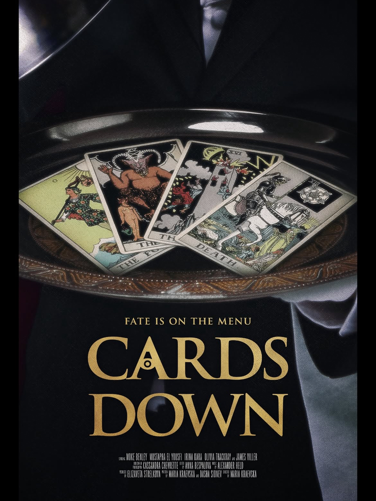
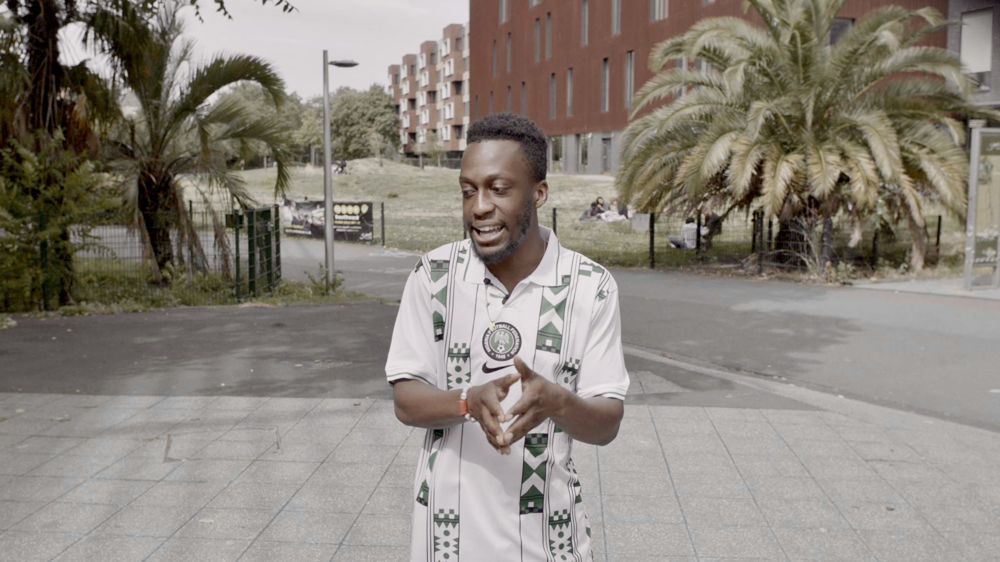

Selected Credits
Wodcast (2026)
Podcast, Season one, six episodes, featuring Stephen Fry, Elif Shafak, David Larbi, Waad Al-Kateab, Tim Rice and more
Hosts: Benjamin Aston & Mabel Evans
Production Sound Mixer: Amias Hanley
The Mouse (2025)
Psychological thriller, 15 minutes
Director: Eden Genish
Production Sound Mixer / Boom Operator: Amias Hanley
Official Selection: Worcester Film Festival 2026, Kino London Short Film Festival 2026
White Walls (2025)
Short Film, Horror, Runtime: 6 mins
Director: Aiyana Goodfellow
Production Sound Mixer / Boom Operator: Amias Hanley
Iustitium (2026)
Short film, Horror, Runtime: 19 minutes
Director: Roy Scintei
Production Sound Mixer / Boom Operator: Amias Hanley
Official Selection: The International Istanbul Short Film Festival 2025, Urbanite Arts & Film Festival 2025
My Half Night (2025)
Feature Film, Arthouse Drama, Runtime: 80 minutes
Director: Shan Ng
Production Sound Mixer / Boom Operator: Amias Hanley
Vallance Community Trust (2025)
Short Film, Documentary, Runtime: TBC
Director: Saabeah Theos
Production Sound Mixer / Boom Operator: Amias Hanley
Laugh with Me (2023)
Short Film, Drama, Runtime: 17 minutes
Director: Karen Liebau McPherson
Sound Designer & Additional Location Recordist: Amias Hanley
Official Selection: Setting Sun Film Festival 2024, Flickerfest International Short Film Festival 2023, Borrego Springs Film Festival 2023
Holding Tightly (2021)
Documentary, Runtime: 30 minutes
Directors: Lisa Palmer, Susanna Barnes
Sound Editor: Amias Hanley
Official Selection: Society for Visual Anthropology Film and Media Festival (SVAFMF) 2021, Dili International Film Festival 2021

Arlo's Last Day (2026)
Short film, Drama, Runtime: TBC
Director: Chioma Ejimofo
Production Sound Mixer / Boom Operator: Amias Hanley

Cards Down (2026)
Short film, Dark Comedy, Runtime: TBC
Director: Maria Kraevska
Production Sound Mixer / Boom Operator: Amias Hanley

This Is How We Speak Nigerian (2025)
Short Film, Documentary, Runtime: TBC
Director: Atlas Rome
Production Sound Mixer / Boom Operator: Amias Hanley